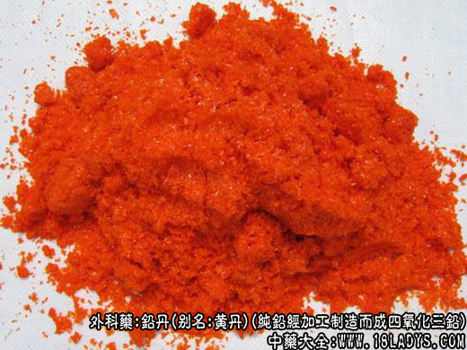

铅丹为少常用中药。始载《神农本草经》列为下品。《名医别录》释名黄丹。
别名：黄丹、彰丹。
来源：为纯铅经加工制造而成四氧化三铅。
产地：主产于广东佛山、湖北武汉、四川重庆、山东青岛、湖南湘潭以及天津市。各地均可制造。过去主产彰德（今河南安阳），故习称彰丹。
加工方法：
处方：纯铅250kg，白矾5kg，土火硝（硝酸钠）15kg，玄明粉5kg。
制法：
（1）化铅：将铅放入铁锅内，加热至327.5℃以上，铅即变成液体，为使吸氧加快，须不停地搅拌，至铅变成灰黄色或淡绿色粉末即可取出。
（2）炒料：取铅粉放在平锅内，兑入白矾等辅料，搅拌均匀，加热，并不停搅拌，约8小时将粉末堆成凸形，封火。
其粉末即变成米黄色或浅杏黄色块状，（如不加辅料即为“密陀僧”）冷却粉碎后，再将粉末放平锅内，先用文火烤6-7小时，以后加大火力并不停搅拌，其粉末即出米黄色逐渐加深至深黄色，约16小时至粉末在锅内呈黑红色时，堆成凸形，闷火，（否则铅还原）。待冷却后取出，用沸水漂之，使辅料中硝等杂质浮于水面漂出。取出沉淀的铅粉，继续加热拌炒，至充分干燥后，粉碎、过罗，即成。（天津工艺）。
性状鉴别：为细粉末，橙黄色或橙红色。体质沉重，略光滑，无粗糙感，摸之手被染成红色。气无，味微辛。比重8-9。
不溶于水，部分溶于稀酸。如遇硝酸时，部分溶解成硝酸铅；部分沉淀为褐色的过氧化铅。烧炽之，放出氧气，一部分变为氧化铅。
以粉细，光滑，无粗糙感，入水即沉，不起漂浮物者为佳。
主要成分：为金属铅的化合物。
药理作用：拔毒生肌。
炮制：原品药用。
性味：辛，微寒，有毒。
归经：入心、脾、肝经。
功能：内服镇惊坠痰；外用拔毒生肌。
主治：惊痫癫狂，疟疾，吐血，反胃，金疮出血，肿毒溃疡。
临床应用：主要用于外科，能与植物油化合，成为制膏药的基础剂，以解毒收敛见长，常制成药膏，治疗疮疡等，方如治黄水方。但不可久用。
用量：外用适量。
处方举例：
治黄水方（《本草纲目》）：铅丹、轻粉、松香、石矾以香油熬膏外敷。
注：
（1）成分：含四氧化三铅，是作黑膏药的主要原料。
（2）炒丹时所用的硝矾等辅料，是为了助氧，丹成之后，必须用沸水漂净，否则熬膏药时起沫，并易吸潮，结块。
（3）现在代工部门制造铅丹，不加辅料，其色泽也能变红，熬膏药或制成防锈漆涂铁防锈，均可使用。